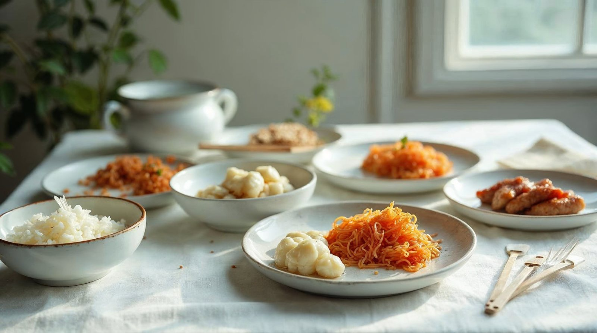
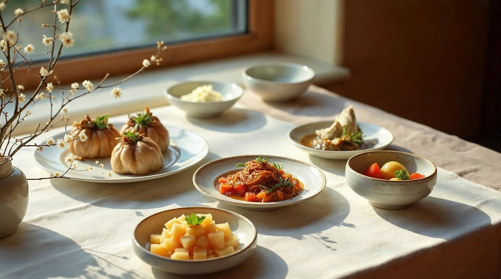
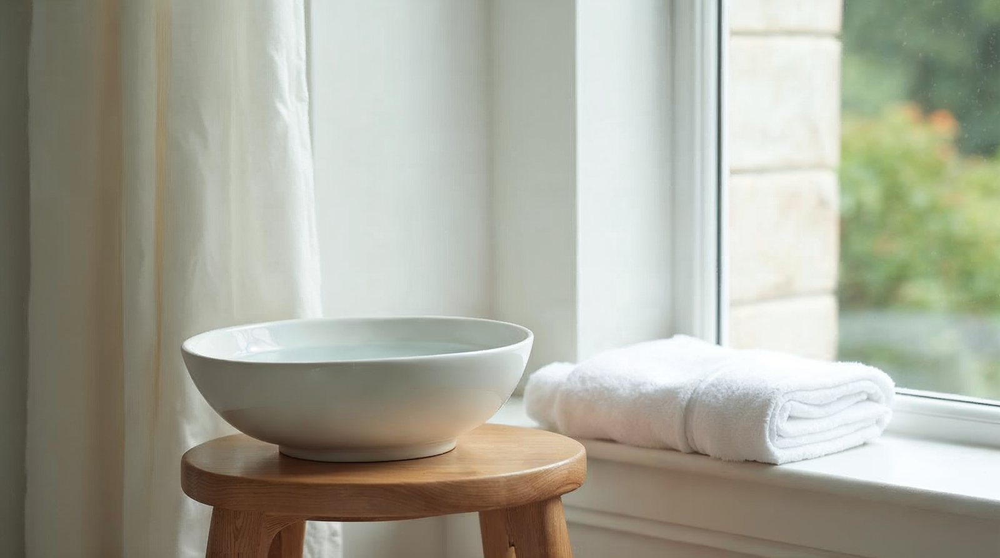
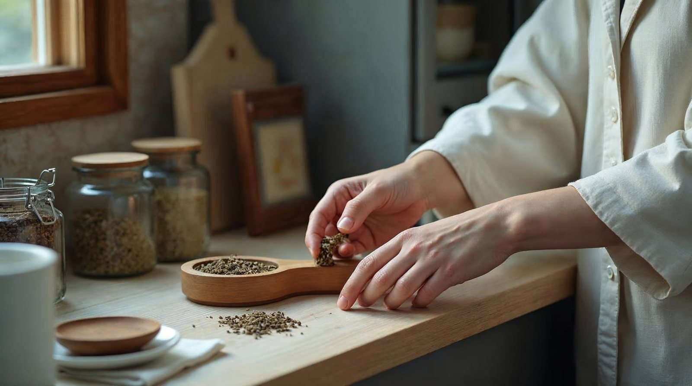
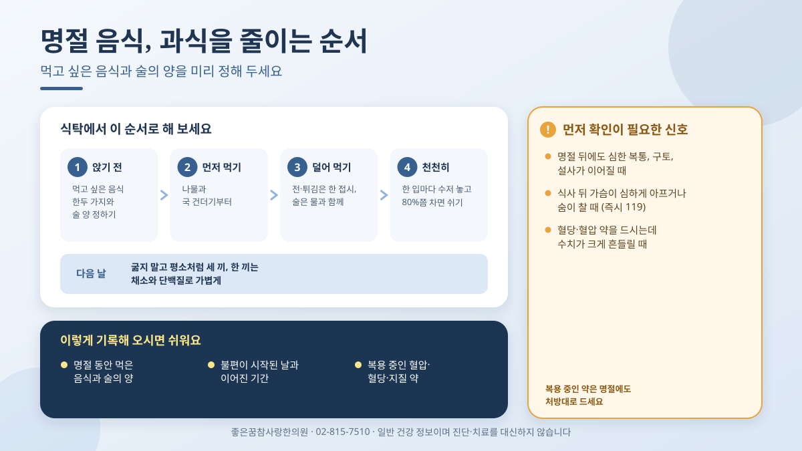

이종호 한의사 감수좋은꿈참사랑한의원 대표원장 (한의사 면허번호 19769)발행 2026-11-22 · 수정 2026-11-26
이 글의 차례
명절 과식을 줄이려면 식탁에 앉기 전에 꼭 먹고 싶은 음식 한두 가지와 술의 양을 미리 정하고, 나물과 국 건더기처럼 채소를 먼저 먹는 방법이 도움이 될 수 있습니다. 완벽하게 참으려다 자책하기보다 조금씩 조절하는 쪽이 오래갑니다. 다음 날에는 굶지 말고 평소 세 끼로 돌아가는 것이 핵심입니다.
진료실에서 명절 끝나고 자주 듣는 말이 있어요. "원장님, 저 별로 많이 먹지도 않았는데 몸이 왜 이렇게 무거워요?" 그 말씀이 맞는 경우가 많아요. 한 끼에 많이 드신 게 아니라, 하루 종일 조금씩 계속 드신 거거든요.
많이 먹은 것과 오래 먹은 것은 다른 얘기예요
저는 명절 과식을 볼 때 이 둘을 나눠요. 한 끼를 많이 먹은 건 그다음 끼니를 가볍게 하면 비교적 빨리 정리가 돼요. 그런데 아침부터 밤까지 전 한 조각, 떡 한 개, 과일 몇 쪽이 이어지면 위가 쉬는 시간이 없어요.
공백이 제일 중요해요, 공백이. 끼니와 끼니 사이에 속이 한 번 비어야 몸도 정리를 할 수 있거든요. 명절엔 이 공백이 사라지기 쉬워서, 양보다 먹는 시간이 길어진 게 더 부담이 되는 경우가 많아요.
왜 이런 불편이 생길 수 있나요
- 전, 튀김, 떡처럼 기름지고 탄수화물이 많은 음식이 한 상에 모여 있어 평소보다 쉽게 많이 먹게 됩니다.
- 오래 앉아 이야기하며 먹다 보면 배가 부르다는 신호를 놓치기 쉽습니다.
- 술과 단 음료가 더해지면 전체 섭취량이 늘고 잠도 얕아질 수 있습니다.
- 먹은 뒤 자책하고 다음 끼니를 굶는 일이 반복되면 식욕의 리듬이 더 흔들리기도 합니다.
왜 굶었다 먹었다를 반복하면 오히려 더 쌓일까요? 저는 월급날로 비유해서 말씀드려요. 회사가 월급을 매달 5일에 주다가 "다음 달은 1일에서 15일 사이 언젠가 줄게" 하면, 직원들은 돈을 편하게 못 쓰고 아껴 두겠죠.
몸도 비슷해요. 언제 다음 음식이 들어올지 예측이 안 되면, 들어온 걸 쓰기보다 저장하려는 쪽으로 기울기 쉬워요. 명절에 끼니가 들쭉날쭉하고, 다음 날 자책하며 굶는 일이 이어지면 몸이 더 꽉 붙잡는 거예요.
그래서 저는 명절 뒤에 굶으라는 말 대신, 평소 시간에 평소처럼 드시라고 말씀드려요. 몸에 "다음 끼니는 제때 온다"는 신호를 다시 주는 거죠. 그게 굶는 것보다 몸을 덜 흔들어요.
명절엔 움직임도 확 줄어요. 오가는 길엔 차 안에 몇 시간씩 앉아 있고, 도착하면 앉아서 먹고 이야기하고, 밤엔 늦게 자요. 먹는 건 늘고 움직임은 줄고 잠은 짧아지는 거죠. 그래서 명절 뒤의 무거움은 음식만의 문제가 아니에요.
휴게소에 들를 때마다 몇 분이라도 걷고, 차 안에서는 발목을 까딱이며 다리를 움직여 주세요. 휴게소 간식도 하나씩 사다 보면 도착 전에 이미 한 끼가 되기 쉬워서, 물이나 따뜻한 차로 대신해 보시면 좋아요. 센 운동이 아니라 이렇게 자주, 약하게 움직이는 게 좋아요.
자주 하는 오해
- 명절에 많이 먹었으니 다음 날은 굶어야 한다고 여기기 쉽지만, 끼니를 거르면 오히려 다음 식사에서 더 많이 먹게 되는 경우가 많습니다.
- 나물과 채소 반찬은 얼마든지 먹어도 된다고 생각하기 쉽지만, 기름에 볶은 나물이나 간이 센 반찬은 양을 함께 살피는 편이 좋습니다.
- 소화제를 미리 먹어 두면 괜찮다고 여기는 분도 있지만, 먹는 양과 속도를 그대로 두면 불편이 반복되기 쉽습니다.
- 한 번 과식했으니 이번 연휴는 망쳤다고 생각하기 쉽지만, 한 끼를 넘쳤더라도 다음 끼니부터 평소대로 돌아가면 됩니다.
예를 들면 이런 경우입니다
- 예를 들어 시댁과 친정을 하루에 오가며 점심과 저녁을 두 번씩 드시게 되는 분이라면, 첫 집에서는 나물과 국 위주로 가볍게 드시고 두 번째 집에서 먹고 싶던 음식을 한두 가지 고르는 식으로 미리 나눠 둡니다.
- 예를 들어 명절 내내 전을 부치며 간을 보느라 끼니가 흐트러지는 분이라면, 일을 시작하기 전에 밥 한 공기를 제대로 드시고, 간 보는 음식은 작은 접시에 덜어 양을 눈으로 확인합니다.
- 예를 들어 오랜만에 만난 친척들과 밤늦게까지 술자리가 이어지는 직장인이라면, 자리 시작 전에 '오늘은 몇 잔까지'를 정해 두고, 잔을 비울 때마다 물 한 컵을 함께 마시는 방법을 써 봅니다.
먼저 이렇게 여쭙니다
- 명절이나 모임 뒤에 주로 어떤 불편이 생기나요? 더부룩함, 속쓰림, 붓기 중 어떤가요?
- 먹고 나서 자책이 들어 다음 끼니를 거르는 편인가요?
- 술은 보통 얼마나 드시나요?
- 혈압, 혈당, 콜레스테롤 약을 드시나요?
- 명절 동안 잠은 몇 시에 드셨고, 몇 시간쯤 주무셨나요?
- 하루에 몇 집을 오가셨고, 끼니는 몇 번쯤 드셨나요?
- 상을 차리는 쪽이셨나요, 손님으로 가셨나요?
질문이 많아 보여도 미리 다 정리하지 않으셔도 돼요. 오시면 제가 하나씩 여쭤 볼게요. 기억나는 것만 말씀해 주시면 나머지는 대화하면서 같이 채워 가면 되거든요.

스스로 점검해 보세요
- 명절이 지나면 2~3일 넘게 속이 더부룩하다
- 명절 동안 잠드는 시각이 평소보다 두 시간 이상 늦어진다
- 배가 부르다는 느낌이 들어도 젓가락을 내려놓기 어렵다
- 먹고 나서 자책하며 다음 끼니를 거른 적이 있다
- 명절 뒤 얼굴과 손발이 붓고 몸이 무겁다
- 술자리가 하루에 두 번 이상 이어진 날이 있다
해당하는 항목이 여럿이라면 진료 때 말씀해 주시면 상담이 쉬워집니다.

일상에서 먼저 해 볼 수 있는 것
- 먹고 싶은 음식 한두 가지를 골라 그것은 충분히 즐기기
- 식사 시작 전 나물과 국 건더기 위주로 먼저 먹기
- 전이나 튀김은 한 접시만 덜고, 술과 음료 양을 미리 정해 물과 함께 마시기
- 한 입 먹을 때마다 수저를 내려놓고, 배가 80퍼센트쯤 찼다고 느끼면 잠깐 쉬기
- 다음 날에는 평소처럼 세 끼를 규칙적으로, 한 끼는 채소와 단백질로 가볍게
- 혈압·당뇨약을 드신다면 연휴에도 약 시간을 평소대로 지키고, 빈속에 술을 마시지 않기
이렇게 여러 가지를 적었지만 다 하시라는 건 아니에요. 명절에 그걸 다 지키기는 원래 어려워요. 그래서 딱 하나만 부탁드려요. 배가 고프지 않으면 '먹어 주지' 않는 거예요.
명절엔 권하는 음식이 많잖아요. 배가 부른데도 성의를 생각해서, 남기기 아까워서 한 입씩 더 먹어 주게 되죠. 그 한 입이 쌓이는 거예요. "배가 불러서요, 조금만 싸 주세요" 한마디면 충분해요. 딴 거는 편하게 하셔도 돼요.
명절 상을 차리는 쪽이라면 접시를 처음부터 작은 것으로 내 두는 것만으로도 덜어 먹는 양이 자연스럽게 줄기 쉽습니다. 식사 뒤에는 바로 앉아 과일과 떡을 이어 먹기보다 10~15분쯤 설거지를 돕거나 동네를 가볍게 걸어 보세요. 연휴 마지막 날에는 다음 날 출근을 생각해 저녁을 이르게, 가볍게 마무리하는 편이 아침 몸을 덜 무겁게 합니다.
명절 음식을 고를 때는 무엇을 먼저 볼까요?
명절 상에는 먹고 싶은 게 너무 많잖아요. 다 조금씩 맛보려다 보면 결국 다 먹게 되기 쉬워요. 그래서 저는 상 앞에 앉기 전에 '오늘의 주인공' 두 가지를 정하시라고 말씀드려요.
- 일 년에 한 번 먹는 음식, 꼭 먹고 싶은 음식 두 가지를 먼저 고르기
- 그 두 가지는 미안해하지 말고 맛있게, 천천히 드시기
- 나머지 음식은 맛만 보거나, 국과 나물로 채우기
- 떡과 한과, 식혜처럼 단 음식은 식사 끝에 한 가지만
좋아하는 걸 다 참으면 오히려 연휴 마지막 날 몰아서 드시게 되는 경우가 많아요. 즐길 건 즐기고, 나머지에서 조절하는 게 오래가는 방법이에요.
전은 기름을 많이 먹는 음식이라 몇 조각만 드셔도 생각보다 양이 꽤 돼요. 키친타월에 한 번 눌러 기름을 빼고 드시거나, 간장보다 초간장을 곁들이면 덜 느끼하다는 분도 있어요.
명절 뒤 사흘은 어떻게 보내면 좋을까요?
- 첫날: 평소 일어나는 시간에 일어나고, 아침은 배가 고프면 가볍게, 아니면 따뜻한 물부터
- 둘째 날: 세 끼를 평소 시간에 맞추고, 한 끼는 채소와 두부, 생선처럼 가볍게
- 셋째 날: 남은 명절 음식은 한 번에 정리하기보다 조금씩 나눠 얼려 두고, 하루 이삼십 분 천천히 걷기
남은 전과 떡이 냉장고에 가득하면 손이 계속 가기 쉬워요. 한 번 먹을 만큼씩 나눠 냉동해 두면, 버리지 않으면서도 며칠에 걸쳐 몰아 먹는 일을 줄일 수 있어요.
체중계에 오르고 놀라시는 분도 많아요. 명절 직후의 체중은 짠 음식과 수분 때문에 잠깐 늘어 보이는 경우가 많으니, 며칠 평소대로 지낸 뒤에 다시 재 보셔도 괜찮아요.
상을 차리는 분은 왜 더 지칠까요?
명절에 가장 고생하시는 분은 상을 차리는 분이에요. 새벽부터 전을 부치고, 손님상을 내고, 설거지까지 하다 보면 정작 본인은 제대로 앉아서 한 끼도 못 드시는 경우가 많거든요.
그러면 간 보느라 조금씩, 남은 음식 아까워서 조금씩 드시게 돼요. 밥은 제대로 안 먹었는데 종일 무언가를 먹은 셈이죠. 몸은 지치고, 잠은 짧고, 속은 쉴 틈이 없는 거예요.
상을 차리는 분일수록 일을 시작하기 전에 한 끼를 앉아서 제대로 드셨으면 해요. 그리고 일을 나눌 수 있다면 가족에게 꼭 나눠 주세요. 몸을 아끼는 것도 명절을 잘 보내는 방법이에요.
명절이 끝나고 며칠 몸이 무겁고 잠이 안 돌아온다면, 그건 먹은 것보다 지친 게 더 큰 경우가 많아요. 그럴 땐 음식만 줄이려 하지 마시고 잠부터 평소대로 돌려 주세요. 연휴 마지막 날 밤만이라도 평소 시간에 누우면 다음 날 아침이 한결 가볍다는 분이 많아요. 잠이 보약이에요.

얼마나 지켜보고, 언제 바로 확인할까요
명절 뒤 더부룩함이나 붓기는 평소 세 끼와 잠으로 돌아가면 사흘 안팎에 가라앉는 경우가 많습니다. 일주일쯤 지나도 속이 계속 불편하거나 다음 명절마다 같은 일이 되풀이된다면 식사 습관과 소화 상태를 함께 살펴보는 편이 좋습니다.
반면 심한 복통이나 구토가 계속되거나, 검은 변이나 피를 토하는 일이 있으면 지켜보지 말고 가까운 응급실로 가세요. 체한 줄 알았는데 가슴이 조이듯 아프고 식은땀이 나거나 숨이 차다면 체기가 아니라 심장 문제일 수 있으니, 기다리지 말고 바로 가까운 응급실을 찾으세요.

한의원에서 함께 살필 수 있는 경우
- 모임 뒤마다 더부룩함과 속쓰림이 며칠씩 이어지는 경우 소화 기능과 식사 속도를 함께 살핍니다.
- 먹는 양을 조절하기 어렵고 먹은 뒤 자책이 드는 경우 식욕과 감정, 잠의 흐름을 함께 봅니다.
- 명절 뒤 몸이 붓고 무거운 경우 순환과 활동량, 수면을 함께 살핍니다.
- 명절마다 잠이 흐트러진 뒤 일상으로 돌아오기 힘든 경우 잠과 피로를 함께 여쭙니다.
먹고 나서 자책이 드는 분들이 많아요. 그런데 그건 의지가 약해서가 아니에요. 명절은 원래 그렇게 먹게 되는 자리고, 누구나 그래요. 자책은 내려놓으시고, 다음 끼니부터 평소대로 돌아가는 것만 같이 하시면 돼요. 그 나머지는 제가 채워 드릴게요.
좋은꿈참사랑한의원에서는 먼저 식사 흐름과 불편을 듣고, 진맥을 기본으로 하고 필요하다고 판단될 때 설진·복진을 더해 살핀 뒤 상태에 맞춰 침이나 한약 상담 등을 정합니다. 다음 모임 전에 해 볼 식사 순서도 함께 정합니다.
처음 오시면 데스크에서 기본 정보를 적고, 모든 분의 맥을 먼저 짚은 뒤 명절 동안의 식사와 술, 잠, 배변과 붓기를 차례로 여쭙습니다. 혈압·혈당 기록이나 검진 결과지가 있으면 함께 보고, 그날 받을 치료와 이유를 먼저 설명해 드립니다. 다음 진료에서는 그사이 속과 잠이 어떻게 달라졌는지 이어서 여쭙습니다.
이렇게 기록해 오시면 상담이 쉬워집니다
- 명절 동안 먹은 음식과 술의 양
- 불편이 시작된 날과 이어진 기간
- 다음 날 식사를 거른 횟수
- 복용 중인 혈압·혈당·지질 약과 집에서 잰 혈압·혈당 수치(있다면)
명절 기간은 기억이 뒤섞이기 쉬우니, 하루가 끝날 때 휴대전화 메모에 그날 먹은 주요 음식과 술, 잠든 시각만 짧게 남겨 두세요. 불편이 생긴 날에 표시를 해 두면 어떤 상황에서 속이 무거워지는지 진료 때 함께 찾아보기 쉽습니다.
이런 증상은 먼저 확인이 필요합니다
- 명절 뒤에도 심한 복통, 구토, 설사가 이어지는 경우
- 체한 것 같은데 가슴이 조이거나 짓누르듯 아프고 식은땀·숨참이 함께 있는 경우(심장 문제일 수 있어 지체 없이 가까운 응급실)
이런 신호가 있으면 한의원보다 가까운 병원이나 응급실을 먼저 찾으세요.
함께 읽으면 좋은 글
- 명절에 여러 집을 오가며 식사 시간이 뒤엉켜 속이 불편할 때는 어떻게 하나요?
- 뷔페에서 많이 먹고 난 뒤 속이 거북할 때는 어떻게 살피나요?
- 술자리에서 안주는 어떻게 고르면 몸 부담을 줄일 수 있나요?

여쭙는 것
- 명절이나 모임 뒤에 주로 어떤 불편이 생기나요? 더부룩함, 속쓰림, 붓기 중 어떤가요?
- 먹고 나서 자책이 들어 다음 끼니를 거르는 편인가요?
- 술은 보통 얼마나 드시나요?
생활에서 해 볼 것
- 먹고 싶은 음식 한두 가지를 골라 그것은 충분히 즐기기
- 식사 시작 전 나물과 국 건더기 위주로 먼저 먹기
- 전이나 튀김은 한 접시만 덜고, 술과 음료 양을 미리 정해 물과 함께 마시기
한의원에서 함께 살필 것
- 모임 뒤마다 더부룩함과 속쓰림이 며칠씩 이어지는 경우 소화 기능과 식사 속도를 함께…
- 먹는 양을 조절하기 어렵고 먹은 뒤 자책이 드는 경우 식욕과 감정, 잠의 흐름을 함…
- 명절 뒤 몸이 붓고 무거운 경우 순환과 활동량, 수면을 함께 살핍니다.
먼저 확인이 필요한 신호
- 명절 뒤에도 심한 복통, 구토, 설사가 이어지는 경우
- 체한 것 같은데 가슴이 조이거나 짓누르듯 아프고 식은땀·숨참이 함께 있는 경우(심장…
한눈에 보는 표
| 구분 | 핵심 |
|---|---|
| 여쭙는 것 | 명절이나 모임 뒤에 주로 어떤 불편이 생기나요? 더부룩함, 속쓰림, 붓기 중 어떤가요? 먹고 나서 자책이 들어 다음 끼니를 거르는 편인가요? |
| 생활에서 해 볼 것 | 먹고 싶은 음식 한두 가지를 골라 그것은 충분히 즐기기 식사 시작 전 나물과 국 건더기 위주로 먼저 먹기 |
| 한의원에서 함께 살필 것 | 모임 뒤마다 더부룩함과 속쓰림이 며칠씩 이어지는 경우 소화 기능과 식사 속도를 함께 살핍니다. 먹는 양을 조절하기 어렵고 먹은 뒤 자책이 드는 경우 식욕과 감정, 잠의 흐름을 함께 봅니다. |
| 먼저 확인이 필요한 신호 | 명절 뒤에도 심한 복통, 구토, 설사가 이어지는 경우 체한 것 같은데 가슴이 조이거나 짓누르듯 아프고 식은땀·숨참이 함께 있는 경우(심장 문제일 수 있어 지체 없이 가까운 응급실) |
자주 묻는 질문
명절에 많이 먹은 뒤에는 어떻게 하면 좋을까요?
굶기보다 다음 끼니를 평소처럼 규칙적으로 먹는 것이 도움이 될 수 있습니다.
술을 전혀 안 마시면 눈치가 보여요.
드시지 않아도 괜찮습니다. 잔에 물이나 차를 채워 함께 건배해도 되고, 마신다면 양을 미리 정해 물과 번갈아 드시길 권합니다.
약을 먹고 있어도 명절 음식을 먹어도 되나요?
혈압, 혈당, 지질 약은 명절에도 처방대로 드시고 음식과 술의 양을 조절해 주세요. 당뇨약을 드시는 분은 빈속에 마신 술이 혈당을 지나치게 떨어뜨릴 수 있고, 혈압약을 드시는 분은 짠 국물과 술이 혈압을 올릴 수 있습니다. 궁금한 점은 처방한 의사와 상의하세요.
명절 뒤 몸이 부었을 때는 어떻게 하나요?
짠 음식과 늦은 식사를 며칠 줄이고 평소 잠과 활동으로 돌아가 보세요. 붓기가 일주일 넘게 이어지거나 숨이 차면 한의원보다 병원 진료를 먼저 받으세요.
좋은꿈참사랑한의원은 재진 때 지난번 이야기부터 이어서 여쭙니다. 진료시간과 예약은 오시는 길에서 확인하세요.
어디서 상담받을 수 있나요?
좋은꿈참사랑한의원은 서울 동작구 만양로2길 2 신성빌딩 3층·5층(서울 동작구 상도동, 7호선 상도역 3번 출구 근처)에 있습니다. 한의사 3명(이종호 대표원장, 조영기 수석진료원장, 정원영 진료원장)이 진료합니다. 진료시간은 평일 09:30~20:00(점심 13:00~14:00), 토·일·공휴일 09:30~15:00이며, 방문 전 전화로 확인을 권합니다. 예약은 네이버 예약, 카카오톡 상담, 전화 02-815-7510로 받습니다.
이 글은 일반적인 건강 정보이며 개인의 진단이나 치료를 대신하지 않습니다. 증상이 있거나 복용 중인 약이 있다면 진료를 통해 확인하세요. 치료 효과는 개인마다 다를 수 있습니다.
작성 기준: 일반적으로 알려져 있는 건강 정보를 참고해 정리했습니다(대표원장 감수). 증상 기록은 1~2주 동안 하루 1회, 비슷한 시간에 적어 오시면 지난 상태와 비교하기 쉽습니다.